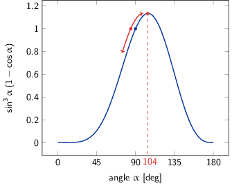

TD10 : Induction électromagnétique
1 Introduction
En régime variable, le champ magnétique demeure toujours à flux conservatif à savoir que
\begin{align*} \varoiint_S\vv{B}.\vv{dS}=0 \end{align*}reste vrai à tout instant \(t\). En revanche, la variation du flux magnétique au travers d'une surface (non-fermée) est à l'origine d'une force électro-motrice \(e(t)\) qui s'exprime selon la loi de Faraday1
l'expression de la force électro-motrice se déduit de la relation de Maxwell-Faraday \(\rot\vv{E}=-\frac{\partial\vv{B}}{\partial t}\) qui, dans sa version intégrale, donne \(\oint_\mathcal{C}\vv{E}.\vv{d\ell}=-\frac{\partial}{\partial t}\iint_{S/\mathcal{C}}\vv{B}.\vv{dS}=-\frac{d\Phi}{dt}\). La force électro-motrice \(e(t)\) est donc équivalente à la circulation du champ électrique le long du contour \(\mathcal{C}\).
Ainsi, un courant \(i(t)\) parcourant une boucle \(\mathcal{C}\) crée un champ magnétique \(\vv{B}_P(M,t)\) dont le flux s'oppose à l'augmentation du flux qu'on impose (loi de Lenz) : le flux magnétique propre s'écrit
\begin{align*} \Phi_P=\iint_{S/\mathcal{C}}\vv{B}_P.\vv{dS}=L\times i \end{align*}où \(L\) est l'inductance propre du circuit. On parle d'auto-induction.
Si un circuit filiforme auto-induit une force qui s'oppose à l'établissement du champ magnétique, deux circuits électriques induisent mutuellement une force sur chacun d'entre eux. En considèrant deux circuits parcourus respectivement par un courant \(i_1(t)\) et un courant \(i_2(t)\), le flux magnétique induit par le premier sur le second circuit s'exprime
\begin{align*} \Phi_{1\to2}=M_{1\to2}I_1 \end{align*}de même que le deuxième circuit induit un flux magnétique égal à \(\Phi_{2\to1}=M_{2\to1}I_2\). Les coefficients \(M_{i\to j}\) sont appelés coefficients d'inductance mutuelle et sont, selon le théorème de Neumann, égaux i.e. \(M_{1\to2}=M_{2\to1}=M\) 2.
dans le cas de deux bobines chacune constituées respectivement de \(N_1\) et \(N_2\) spires, le coefficient d'inductance mutuelle est proportionnel au produit \(N_1N_2\).
En ajoutant à l'inductance mutuelle, l'auto-induction, les flux magnétiques au travers du premier et du second circuit sont
\begin{align*} \Phi_1&=L_1i_1+Mi_2\\ \Phi_2&=L_2i_2+Mi_1 \end{align*}desquels on déduit les forces électro-motrices
\begin{align*} e_1&=-\frac{d\Phi_1}{dt}=-L_1\frac{di_1}{dt}-M\frac{di_2}{dt}\\ e_2&=-\frac{d\Phi_1}{dt}=-L_2\frac{di_2}{dt}-M\frac{di_1}{dt} \end{align*}D'un point de vue énergétique, l'énergie magnétique stockée dans un circuit est égale à \(\mathcal{E}_m=\frac{1}{2}Li^2\). Pour deux circuits, il s'agit de prendre en compte l'effet d'un circuit vis-à-vis de l'autre soit
\begin{align*} \mathcal{E}_m=\frac{1}{2}L_1i_1^2+\frac{1}{2}L_2i_2^2+Mi_1i_2 \end{align*}2 Couplage entre un solénoïde et une bobine
- L'unique champ magnétique est celui crée par le solénoïde que l'on considère
comme infini. Ainsi le champ magnétique est égal à \(\mu_0nI\vv{u_z}\) pour
\(r
- La force électro-motrice \(e(t)\) qui correspond à la variation temporelle
du flux magnétique au travers de la bobine s'écrit
\begin{align*}
e(t)&=-\frac{d\Phi}{dt}=-L_\text{bobine}\frac{di}{dt}-M\frac{dI}{dt}
\end{align*}
où \(i(t)\) est le courant induit. L'expression de \(e(t)\) est ainsi la somme d'un terme d'auto-inductance à savoir que le courant induit \(i(t)\) génère une force s'opposant à son établissement auquel s'ajoute un terme d'inductance mutuelle due à la présence du solénoïde. Dans la mesure où l'inductance \(L_\text{bobine}\) est proportionnelle à \(N^2\) alors que le coefficient d'inductance mutuelle \(M\) est proportionnel à \(n\times N\) et dans l'hypothèse où \(n\gg N\), la f.e.m se réduit à
\begin{align*} e(t)\simeq-M\frac{dI}{dt} \end{align*}Le courant induit \(i(t)\) devient
\begin{align*} e(t)=R\times i(t)\to i(t)&=-\frac{\mu_0nN\pi a^2}{R}\times\frac{dI}{dt}\\ &=-\frac{\mu_0nN\pi a^2}{R}I_0\omega\cos\omega t \end{align*} - Pour un circuit fermé fixe, la force électro-motrice est égale à la
circulation du champ électrique autour de ce circuit3
\begin{align*}
e(t)&=\oint_\mathcal{C}\vv{E}.\vv{d\ell}=2\pi b\times N\times E
\end{align*}
Le champ électrique est donc égal à
3\begin{align*} \vv{E}(t)&=-\frac{\mu_0n\cancel{N\pi} a^2}{R}\times{1}{2\cancel{\pi}b\cancel{N}}\times I_0\omega\cos\omega t\,\vv{u_\theta}\\ &=-\frac{\mu_0n}{2}\times\frac{a^2}{b}\times I_0\omega\cos\omega t\,\vv{u_\theta} \end{align*}le plan \((\vv{u_r},\vv{u_z})\) est un plan d'antisymétrie impliquant que le champ électrique soit orienté selon \(\vv{u_\theta}\)
- Le potentiel vecteur \(\vv{A}\) obéit aux mêmes symétries que le champ électrique : \(\vv{A}\) est colinéaire à \(\vv{u_\theta}\) et ne dépend que de la distance à l'axe du solénoïde.
- \(\vv{B}=\rot\vv{A}=\frac{1}{r}\frac{\partial}{\partial
r}\left(rA_\theta\right)\vv{u_z}\)
- pour \(r
- pour \(r>a\) \begin{align*} \frac{1}{r}\frac{\partial}{\partial r}\left(rA_\theta\right)&=0\\ A_\theta&=\frac{\text{constante}}{r}\\ \end{align*}
Le potentiel-vecteur \(\vv{A}\) étant par définition un potentiel, il doit demeurer continu en \(r=a\) soit
\begin{align*} \frac{\text{constante}}{a}&=\frac{\mu_0nI}{2}a\to\text{constante}=\frac{\mu_0nI}{2}a^2\\ \vv{A}(r>a)&=\frac{\mu_0nI}{2}\frac{a^2}{r}\,\vv{u_\theta} \end{align*} - pour \(r>a\) \begin{align*} \frac{1}{r}\frac{\partial}{\partial r}\left(rA_\theta\right)&=0\\ A_\theta&=\frac{\text{constante}}{r}\\ \end{align*}
- pour \(r
- On se place en \(r=b>a\), \begin{align*} -\frac{\partial\vv{A}(r=b)}{\partial t}&=-\frac{\mu_0n}{2}\frac{a^2}{b}\frac{\partial I}{\partial t}\,\vv{u_\theta}\\ &=-\frac{\mu_0n}{2}\frac{a^2}{b}I_0\omega\cos\omega t\,\vv{u_\theta}=\vv{E} \end{align*}
- La force électro-motrice \(e(t)\) qui correspond à la variation temporelle
du flux magnétique au travers de la bobine s'écrit
\begin{align*}
e(t)&=-\frac{d\Phi}{dt}=-L_\text{bobine}\frac{di}{dt}-M\frac{dI}{dt}
\end{align*}
3 Lévitation magnétique
- Calcul du champ magnétique \(B_1\) sur l'axe du solénoïde \(Oz\)
\begin{align*}
\vv{B_1}=\frac{\mu_0ni_1}{2}\left(\cos\theta_1-\cos\theta_2\right)\vv{u_z}
\end{align*}
Sachant que le solénoïde est semi-infini \(\theta_1\sim0\) et que \(\theta_2=\alpha\) avec \(\tan\alpha=\frac{a}{z}\), le champ magnétique \(B_1\) devient
\begin{align*} \vv{B_1}=\frac{\mu_0ni_1}{2}\left(1-\cos\alpha\right)\vv{u_z} \end{align*}Le flux magnétique induit par le solénoïde au travers de la bobine s'écrit
\begin{align*} \Phi_{S\to B}&=\iint_{S_B}\vv{B_1}.\vv{dS}=\frac{\mu_0ni_1}{2}\left(1-\cos\alpha\right)\times N\times\pi b^2\\ &=M\times i_1\to M=\frac{\mu_0nN\,\pi b^2}{2}\left(1-\cos\alpha\right) \end{align*} - La bobine est traversée par le flux magnétique issue du solénoïde induisant
une force électro-motrice \(e=-\frac{d\Phi_{S\to B}}{dt}=-M\frac{di_1}{dt}\). À
cette f.e.m, il convient d'ajouter l'inductance propre de la bobine
\(e_\text{propre}=-\frac{d\Phi_\text{propre}}{dt}=-L\frac{di}{dt}\). Ainsi, la
f.e.m aux bornes de la bobine est égale à
\begin{align*}
e=R\times i&=-\frac{d\Phi}{dt}\\
&=-\frac{d\Phi_{S\to B}}{dt}-\frac{d\Phi_\text{propre}}{dt}\\
&=-M\frac{di_1}{dt}-L\frac{di}{dt}\\
\frac{di}{dt} + \frac{R}{L}i &=-\frac{M}{L}\frac{di_1}{dt}
\end{align*}
où \(i_1(t)=i_{1m}\cos\omega t\) donc \(\frac{di_1}{dt}=-i_{1m}\omega\sin\omega t\). Cette équation peut se résoudre en cherchant successivement la solution homogène i.e. sans le membre constant \(-\frac{M}{L}\frac{di_1}{dt}\) puis une solution particulière en utilisant, par exemple, la méthode de variation de la constante. On peut également procéder différemment en considérant que \(i(t)\) est la superposition d'un régime transitoire et d'un régime permanent sinusoïdal. On cherche donc \(i(t)\) sous la forme \(A\cos\omega t+B\sin\omega t\). L'équation différentielle devient
\begin{align*} -A\omega\sin\omega t+B\omega\cos\omega t+\frac{R}{L}\left(A\cos\omega t+B\sin\omega t\right)&=\frac{M}{L}i_{1m}\omega\sin\omega t \end{align*}de laquelle, en identifiant terme à terme, on déduit que
\begin{align*} RA+BL\omega&=0\\ -AL\omega+BR&=Mi_{1m}\omega \end{align*}d'où
\begin{align*} A=-\frac{L\omega}{R}B&\to RB+\frac{L^2\omega^2}{R}B=Mi_{1m}\omega\\ &\to B=\frac{RMi_{1m}\omega}{R^2+L^2\omega^2}\\ &\to A=-\frac{ML\omega^2i_{1m}}{R^2+L^2\omega^2} \end{align*}Le courant \(i(t)\) induit dans la bobine prend donc la forme suivante
\begin{align*} i(t)=\frac{M\omega i_{1m}}{R^2+L^2\omega^2}\left(-L\omega\cos\omega t+R\sin\omega t\right) \end{align*} - On assimile la bobine à un dipôle magnétique. Pour rappel, le moment
magnétique d'une spire est égale à \(\vv{\mathcal{M}}=I\times\vv{S}\). Dans
notre cas, la bobine possède donc un moment magnétique égal à
\begin{align*}
\vv{m}(t)=N\times i(t)\times\pi b^2\,\vv{u_z}
\end{align*}
La force qu'exerce le solénoïde sur ce dipôle magnétique s'écrit4
4\begin{align*} \vv{F}_{S\to B}&=\vv{\nabla}\left(\vv{m}.\vv{B}\right)\\ &=\cancel{\left(\vv{\nabla}.\vv{m}\right).\vv{B}}+\vv{m}\left(\vv{\nabla}.\vv{B}\right)\\ &=m\left(\frac{\partial B}{\partial z}\right)\vv{u_z}\quad(\text{car }\vv{B}\parallel\vv{u_z})\\ &=\vv{u_z}\,\pi b^2\frac{\mu_0ni_1Ni}{2}\frac{\partial}{\partial z}\left(1-\cos\alpha\right)\\ &=\vv{u_z}\,\pi b^2\frac{\mu_0ni_1Ni}{2}\frac{\partial}{\partial\alpha}\left(1-\cos\alpha\right)\times\frac{\partial\alpha}{\partial z} \end{align*}l'énergie potentielle d'un dipôle \(\vv{m}\) soumis à un champ magnétique \(\vv{B}\) est \(E_p=-\vv{m}.\vv{B}\) d'où la force \(\vv{F}=-\grad E_p\)
Sachant que \(\tan\alpha=\frac{a}{z}\), l'expression de \(\frac{\partial\alpha}{\partial z}\) s'écrit
\begin{align*} \frac{d}{d\alpha}\tan\alpha&=\frac{\cos\alpha}{\cos\alpha}+\frac{\sin^2\alpha}{\cos^2\alpha}=\frac{1}{\cos^2\alpha}\\ d(\tan\alpha)&=\frac{d\alpha}{\cos^2\alpha}=d\left(\frac{a}{z}\right)=-\frac{a}{z^2}dz\\ \frac{\partial\alpha}{\partial z}&=\frac{d\alpha}{dz}=-\frac{a\cos^2\alpha}{z^2}\\ &=-a\cos^2\alpha\times\frac{\tan^2\alpha}{a^2}=-\frac{\sin^2\alpha}{a} \end{align*}La force exercée par le solénoïde sur la bobine devient
\begin{align*} \vv{F}_{S\to B}&=-\frac{\mu_0\pi b^2}{2a}\times nNii_1\times\sin^3\alpha\,\vv{u_z} \end{align*}La valeur moyenne de cette force \(\langle\vv{F}_{S\to B}\rangle\) consiste à évaluer la valeur moyenne du produit des intensités \(ii_1\) soit
\begin{align*} \langle i(t)\dot i_1(t)\rangle&=\langle i_{1m}\cos\omega t\left(A\cos\omega t+B\sin\omega t\right)\rangle\\ &=\frac{i_{1m}A}{2}=-\frac{ML\omega^2i_{1m}^2}{2\left(R^2+L^2\omega^2\right)} \end{align*}d'où une force moyenne égale à
\begin{align*} \langle\vv{F}_{S\to B}\rangle&=\frac{\mu_0\pi b^2}{4a}\times nN\times\frac{ML\omega^2i_{1m}^2}{R^2+L^2\omega^2}\times\sin^3\alpha\,\vv{u_z} \end{align*}Finalement, en remplaçant \(M\) par \(\frac{\mu_0nN\,\pi b^2}{2}\left(1-\cos\alpha\right)\), on obtient une force moyenne
\begin{align*} \langle\vv{F}_{S\to B}\rangle&=\frac{\mu_0^2}{8}\frac{\pi^2b^4}{a}n^2N^2\sin^3\alpha\left(1-\cos\alpha\right)\frac{L\omega^2}{R^2+L^2\omega^2}\,i_{1m}^2\,\vv{u_z} \end{align*}Lévitation de la bobine
Dans l'hypothèse où la bobine est placée juste au dessus du solénoïde, l'angle α est donc égal à π/2 et \(\sin^2\alpha\left(1-\cos\alpha\right)=1\). Pour compenser le poids de la bobine, il faut que la force exercée par le solénoïde sur la bobine soit égale à \(m\vv{g}\) soit un courant \(i_{1m}=i_\text{lim.}\) ayant pour expression
\begin{align*} \frac{\left(\mu_0nN\pi b^2\right)^2}{8}\times\frac{L\omega^2}{R^2+L^2\omega^2}\times\frac{i_\text{lim.}^2}{a}&=mg\\ i_\text{lim.}&=\sqrt{\frac{8mga\times\left(R^2+L^2\omega^2\right)}{L}}\times\frac{1}{\mu_0\omega nN\pi\b^2} \end{align*}
Autour de la position d'équilibre \(\alpha=\pi/2\), la position de la bobine oscille du fait que lorsque \(z\) augmente, α diminue entrainant une diminution de la force exercée par le solénoïde sur la bobine : le poids a alors tendance à "rappeler" la bobine vers la position \(\alpha=\pi/2\). A contrario, lorsque la bobine pénètre à l'intérieur du solénoïde, le flux magnétique augmente jusqu'à \(\alpha=104\) degrés (\(\tan\alpha\sim-4\)) excédant le poids de la bobine et ayant donc tendance à ramener cette dernière à sa position d'équilibre. L'équilibre est donc stable dans la mesure où l'axe de la bobine reste aligné avec celui du solénoïde.
- La puissance moyenne dissipée par effet Joule a pour expression \begin{align*} \langle P\rangle&=R\cdot\langle i^2\rangle=R\left(\frac{A^2+B^2}{2}\right)\\ &=\frac{1}{2}R\frac{M^2\omega^2i_\text{lim.}^2}{R^2+L^2\omega^2}=\frac{R}{L}mga \end{align*}
4 Principe de la plaque de cuisson par induction
- On considère une casserole occupant le demi-espace \(z>0\), de conductivité
γ et de perméabilité \(\mu_r\). La plaque à induction occupe le
demi-espace \(z<0\) et est parcourue par une densité volumique de courant
\(\vv{J}_0\) qui crée un champ \(\vv{B}=B_1\cos\omega t\,\vv{u}_x\).
- Du fait que le champ magnétique \(\vv{B_1}\) est colinéaire à \(\vv{u_x}\), on déduit que le plan \(yOz\) est un plan de symétrie de la distribution de courant impliquant que \(\vv{J}_0\) est nécessairement orthogonal à ce dernier : \(\vv{J_0}\parallel\vv{u_y}\). Le fait que le problème soit invariant par translation selon \(Ox\) et \(Oy\) impose que la composante suivant \(\vv{u}_z\) de \(\vv{J}_0\) est nulle (\(J_{0z}=\frac{\partial B_y(z)}{\partial x}-\frac{\partial B_x(z)}{\partial y}\)).
- Dans le milieu i.e. dans la casserole, l'invariance par translation selon \(Ox\) et selon \(Oy\) impose que \(\vv{E}\) et \(\vv{B}\) ne dépendent que de \(z\). Par ailleurs, le champ électrique et magnétique sont induits par la distribution de courant \(\vv{J}_0\) : ces champs obéissent donc aux symétries de la distribution de courant à savoir \(\vv{B}\parallel\vv{u}_x\) et \(\vv{E}\parallel\vv{u}_y\) soit \begin{align*} \vv{E}=E(z,t)\,\vv{u}_y\quad\vv{B}=B(z,t)\,\vv{u}_x \end{align*}
- Étant donné les hypothèses du problème, les 4 équations de Maxwell + la
loi d'Ohm s'écrivent
\begin{align*}
\div\vv{E}&=0\\
\div\vv{B}&=0\\
\rot\vv{E}&=-\frac{\partial\vv{B}}{\partial t}\\
\rot\vv{B}&=\mu_0\mu_r\vv{j}\\
\vv{j}&=\gamma\vv{E}
\end{align*}
Le courant de déplacement \(\vv{J}_D=\epsilon_0\frac{\partial\vv{E}}{\partial t}\) est ici négligeable. Les deux premières équations traduisent uniquement les symétries et invariances du problèmes i.e. \(\div\vv{E}=\frac{\partial E_x}{\partial x}+\frac{\partial E_y}{\partial y}+\frac{\partial E_z}{\partial z}=0\) (idem pour \(\div\vv{B}=0\)).
- Les trois dernières équations conduisent au système d'équation suivante
\begin{align*}
\rot\vv{E}=-\frac{\partial\vv{B}}{\partial t}&\to\left|
\begin{array}{l}
\frac{\partial}{\partial x}\\
\frac{\partial}{\partial y}\\
\frac{\partial}{\partial z}
\end{array}\right.\times\left|
\begin{array}{l}
0\\E(z,t)\\0
\end{array}\right.=-\frac{\partial E(z,t)}{\partial z}=-\frac{\partial B(z,t)}{\partial t}\\
\left.\begin{array}{l}
\rot\vv{B}=\mu_0\mu_r\vv{j}\\
\vv{j}=\gamma\vv{E}
\end{array}\right\}&\to\left|
\begin{array}{l}
\frac{\partial}{\partial x}\\
\frac{\partial}{\partial y}\\
\frac{\partial}{\partial z}
\end{array}\right.\times\left|
\begin{array}{l}
B(z,t)\\0\\0
\end{array}\right.=\frac{\partial B(z,t)}{\partial z}=\mu_0\mu_r\gamma E(z,t)
\end{align*}
Étant donné \(B(z,t)=f(z)\exp(-i\omega t)\) et \(E(z,t)=g(z)\exp(-i\omega t)\), on obtient
\begin{align*} \frac{\partial E(z,t)}{\partial z}=\frac{\partial B(z,t)}{\partial t}&\to g'(z)=-i\omega f(z)\\ \frac{\partial B(z,t)}{\partial z}=\mu_0\mu_r\gamma E(z,t)&\to f'(z)=\mu_0\mu_r\gamma g(z) \end{align*}soit en dérivant la seconde équation par rapport à \(z\)
\begin{align*} f''(z)+i\mu_0\mu_r\gamma\omega f(z)=0 \end{align*}
- Étant donné les hypothèses du problème, les 4 équations de Maxwell + la
loi d'Ohm s'écrivent
\begin{align*}
\div\vv{E}&=0\\
\div\vv{B}&=0\\
\rot\vv{E}&=-\frac{\partial\vv{B}}{\partial t}\\
\rot\vv{B}&=\mu_0\mu_r\vv{j}\\
\vv{j}&=\gamma\vv{E}
\end{align*}
- Soit \(\delta=\sqrt{\frac{2}{\mu_0\mu_r\gamma\omega}}\), l'équation
différentielle solution de \(f(z)\) devient
\begin{align}
f''(z)+\frac{2i}{\delta^2}f(z)=0
\end{align}
dont les solutions sont de la forme \(f(z)=Ae^{r_+z}+Be^{r_-z}\) où \(r_\pm\) sont les racines de l'équation caractéritique \(r^2+\frac{2i}{\delta^2}=0\) i.e. \(r_\pm=\pm\sqrt{\frac{-2i}{\delta^2}}\). En simplifiant l'expression de \(r_\pm\) suivant
\begin{align*} i^2=-1\text{ et }i=e^{i\frac{\pi}{2}}&\to r_\pm=\pm\frac{\sqrt 2}{\delta}\times e^{i\frac{3\pi}{4}}\\ &\to r_\pm=\pm\frac{\sqrt2}{\delta}\left(\cos\frac{3\pi}{4}+i\sin\frac{3\pi}{4}\right)\\ &\to r_\pm=\pm\frac{\sqrt2}{\delta}\left(-\frac{\sqrt2}{2}+i\frac{\sqrt2}{2}\right)=\pm\frac{-1+i}{\delta} \end{align*}La fonction \(f(z)\) prend donc la forme suivante
\begin{align*} f(z)=Ae^{(-1+i)\frac{z}{\delta}}+Be^{(1-i)\frac{z}{\delta}} \end{align*}Le fait que \(f(z)\) doit rester finie lorsque \(z\to+\infty\) impose \(B\) soit nul en raison de la divergence du second terme \(Be^{(1-i)\frac{z}{\delta}}=Be^{\frac{z}{\delta}}e^{-i\frac{z}{\delta}}\to+\infty\). Pour déterminer \(A\), on considère les relations de passage en \(z=0\) qui, en l'absence de densité surfacique de courant, s'écrivent
\begin{align*} \vv{H}_\text{casserole}-\vv{H}_\text{plaque}&=\vv{j}_S\times\vv{u}_z=\vv{0}\\ \left.\frac{f(z)\cancel{e^{-i\omega t}}}{\cancel{\mu_0}\mu_r}\right|_{z=0^+}-\left|\frac{B_1\cancel{e^{-i\omega t}}}{\cancel{\mu_0}}\right|_{z=0^-}&=0\\ \frac{A}{\mu_r}-B_1&=0\to A=\mu_rB_1 \end{align*}Finalement, l'expression de \(f(z)\) est
\begin{align*} f(z)=\mu_rB_1\,e^{(-1+i)\frac{z}{\delta}} \end{align*} - D'après l'équation différentielle régissant l'évolution de \(f(z)\), on déduit que \(\delta\) est homogène à une longueur et correspond à l'épaisseur de peau. Le champ magnétique variable engendré par la plaque de cuisson donne naissance à des courants induits dans le milieu conducteur qu'est la casserole. Ces courants sont localisés sur une épaisseur typique de l'ordre de \(\delta\). Au-delà, l'autoinduction de la casserole s'oppose à l'effet qui lui donne naissance et finit par exclure le courant.
- La fonction \(g(z)\) est égale à \(\frac{1}{\mu_0\mu_r\gamma}f'(z)\) soit
\begin{align*}
g(z)&=\frac{1}{\mu_0\cancel{\mu_r}\gamma}\,\cancel{\mu_r}B_1\frac{-1+i}{\delta}e^{(-1+i)\frac{z}{\delta}}\\
&=\frac{\sqrt2}{\mu_0\gamma\delta}\,B_1\,e^{i\frac{3\pi}{4}}e^{(-1+i)\frac{z}{\delta}}\\
&=\frac{\sqrt2}{\mu_0\gamma\delta}\,B_1\,e^{-\frac{z}{\delta}}\,e^{i\left(\frac{z}{\delta}+\frac{3\pi}{4}\right)}
\end{align*}
d'où l'expression réelle de \(E(z,t)\)
\begin{align*} E(z,t)&=\text{Re}\left(g(z)\,e^{-i\omega t}\right)\\ &=\frac{\sqrt2}{\mu_0\gamma\delta}B_1\,e^{-\frac{z}{\delta}}\,\text{Re}\left(e^{i\left(\frac{z}{\delta}+\frac{3\pi}{4}-\omega t\right)}\right)\\ &=\frac{\sqrt2}{\mu_0\gamma\delta}B_1\,e^{-\frac{z}{\delta}}\,\cos\left(\frac{z}{\delta}-\omega t+\frac{3\pi}{4}\right) \end{align*}
- Soit \(\delta=\sqrt{\frac{2}{\mu_0\mu_r\gamma\omega}}\), l'équation
différentielle solution de \(f(z)\) devient
\begin{align}
f''(z)+\frac{2i}{\delta^2}f(z)=0
\end{align}
- La puissance dissipée par unité de volume est
\(\frac{dP}{d\tau}=\vv{j}.\vv{E}=\gamma E^2\) soit
\begin{align*}
\frac{dP}{d\tau}&=\frac{2}{\mu_0^2\gamma\delta^2}B_1^2\,e^{\frac{2z}{\delta}}\,\cos^2\left(\frac{z}{\delta}-\omega t+\frac{3\pi}{4}\right)
\end{align*}
On déduit de ce résultat que la puissance moyenne dissipée par effet Joule est
\begin{align*} \left\langle\frac{dP}{d\tau}\right\rangle_T&=\frac{B_1^2}{\mu_0^2\gamma\delta^2}\,e^{-\frac{2z}{\delta}} \end{align*}tandis que la puissance moyenne par unité de surface s'écrit
\begin{align*} \left\langle\frac{dP}{dS}\right\rangle_T&=\frac{B_1^2}{\mu_0^2\gamma\delta^2}\,\int_0^{+\infty}e^{-\frac{2z}{\delta}}\,dz\\ &=\frac{B_1^2}{\mu_0^2\gamma\delta^2}\left[-\frac{\delta}{2}e^{-\frac{2z}{\delta}}\right]_{0}^{+\infty}\\ &=\frac{B_1^2}{\mu_0^2\gamma\delta^2}\times\frac{\delta}{2}=\frac{B_1^2}{2\mu_0^2\gamma\delta} \end{align*} - Applications numériques :
- Calcul de l'épaisseur de peau \(\delta\)
\begin{align*}
\delta&=\sqrt{\frac{2}{\mu_0\mu_r\gamma\omega}}\\
\delta_\text{Cu}&=\surd{\frac{2}{4\pi\,10^{-7}\times1\times6\,10^{7}\times1000}}=\unit[5]{mm}\\
\delta_\text{acier}&=\surd{\frac{2}{4\pi\,10^{-7}\times1000\times6\,10^6\times1000}}=\unit[0.5]{mm}
\end{align*}
L'épaisseur du fond de la casserole nécessaire est plus petite dans le cas de l'acier par rapport au cuivre. Du point de vue du champ électrique \(E(z,t)\), le fait que \(\delta\) soit plus grand autorise une plus grande pénétration du champ électrique (terme en \(e^{-\frac{z}{\delta}}\)) mais, en contrepartie, le champ électrique est moins intense. La puissance de chauffage par unité de surface est quant à elle inversement proportionnelle à l'épaisseur de peau \(\delta\) : pour maximiser le chauffage, il est plus avantageux d'avoir une épaisseur de peau faible i.e. un champ électrique qui pénètre moins mais qui est plus intense. Dans ces conditions, les casseroles en cuivre sont bien adaptées que celle en acier.
- Calcul du champ magnétique \(B_1\)
\begin{align*}
B_1^2&=2\left\langle\frac{dP}{dS}\right\rangle_T\mu_0^2\gamma\delta\\
B_1^\text{Cu}&=4\pi\,10^{-7}\sqrt{2\times10^4\times6\,10^7\times5\,10^{-3}}=\unit[100]{mT}\\
B_1^\text{acier}&=4\pi\,10^{-7}\sqrt{2\times10^4\times6\,10^6\times5\,10^{-4}}=\unit[10]{mT}
\end{align*}
Les casseroles en acier sont plus avantageuses à la fois en terme d'efficacité de chauffage qu'en terme de sécurité5.
5l'Institut National de Recherche et de Sécurité indique : "Il a été constaté chez des sujets soumis à un champ magnétique variable (autour d'une fréquence de 20 Hz et au-dessus d'un seuil d'intensité de 10 mT), un effet physiologique caractérisé par la perception visuelle de taches lumineuses; ce sont les magnétophosphènes."
- Calcul de l'épaisseur de peau \(\delta\)
\begin{align*}
\delta&=\sqrt{\frac{2}{\mu_0\mu_r\gamma\omega}}\\
\delta_\text{Cu}&=\surd{\frac{2}{4\pi\,10^{-7}\times1\times6\,10^{7}\times1000}}=\unit[5]{mm}\\
\delta_\text{acier}&=\surd{\frac{2}{4\pi\,10^{-7}\times1000\times6\,10^6\times1000}}=\unit[0.5]{mm}
\end{align*}